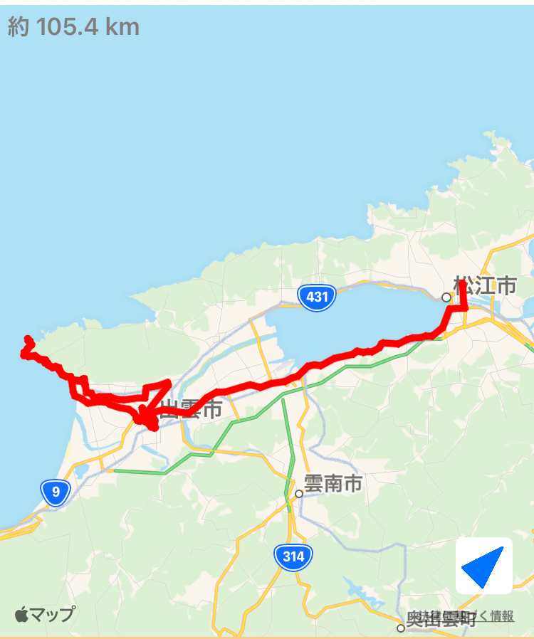

~62日目~
9/1 松江⇨出雲

~63日目~
9/2 出雲⇨益田
~64日目~
9/3 益田⇨萩
~65日目~
9/4 萩⇨角島⇨下関⇨小倉
~66日目~
9/5 小倉⇨八幡
~67日目~
9/6 八幡⇨宮地嶽神社⇨福岡
~68日目~
9/7 福岡⇨鳥栖

~69日目~
9/8 鳥栖⇨吉野ヶ里⇨呼子⇨佐世保
~70日目~
9/9 佐世保⇨七ツ釜洞窟⇨長崎
~71日目~
9/10 長崎⇨諫早⇨雲仙
~72日目~
9/11 雲仙⇨島原⇨天草
~73日目~
9/12 天草⇨熊本
~74日目~
9/13 熊本市内
~75日目~
9/14 熊本⇨阿蘇山⇨八代
~76日目~
9/15 八代⇨あさぎり⇨水俣⇨出水